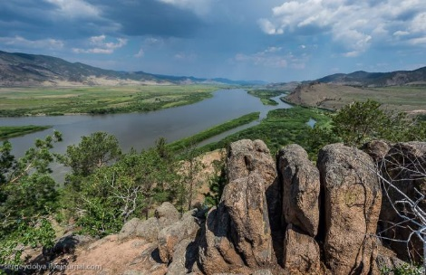

Гора Омулёвка или «Спящий лев» представляет собой высокий утёс, расположенный на правом берегу реки Селенги, в 45 км к юго-западу от города Улан-Удэ, севернее хребта Омулёвого, по западной стороне федеральной автомагистрали Р258 «Байкал»